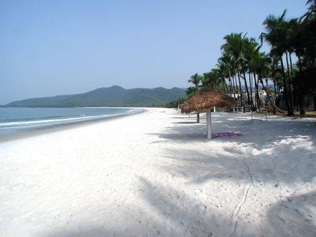

AUSTRALIA
Australia is a wild and beautiful place, a land whose colour palette of red outback sands and Technicolor reefs frames sophisticated cities and soulful Indigenous stories.
NEW ZEALAND
Get ready for mammoth national parks, dynamic Māori culture, and world-class surfing and skiing. New Zealand can be mellow or action-packed, but it's always epic.
SOLOMON ISLANDS
Forget what travelling the Pacific used to be like – around the Solomon Islands it's still that way. These islands are laid-back, welcoming and often surprisingly untouched.

TONGA
Kiss the tourist hype goodbye – and say a warm Malo e lelei (hello!) to the Kingdom of Tonga. Resolutely sidestepping flashy resorts and packaged cruise-ship schtick, Tonga is unpolished, gritty and unfailingly authentic.
Fiji
Set your internal clock to ‘Fiji time’: exploring the archipelago’s exquisite beaches, undersea marvels, lush interiors and fascinating culture shouldn’t be rushed.
PALAU
The Republic of Palau is scenically magical. For such a tiny area of land, it packs a big punch. It's hard not to be overwhelmed by its extraordinary array of natural wonders.

TUVALU
It is generally believed that the earlier ancestors came mostly from Samoa, possibly by way of Tokelau, while others came from Tonga and Uvea (Wallis Island). These settlers were all Polynesians with the exception of Nui where many people are descendants of Micronesians from Kiribati.There are three distinct linguistic areas in Tuvalu.